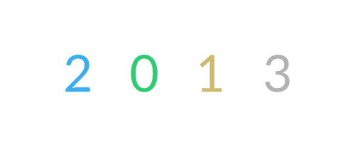

序列
简介
生成随机（或非随机）且不重复的数字序列。

界面
Auto Index：勾选后，图层会自动输出 Sequence 范围内的所有值。
Index：在 Sequence 范围内手动选择一个索引。
Sequence：设置用于创建序列的值范围。
Offset：为序列添加/减去一个值。例如，值为 1 会将 0,1,2,3 转换为 1,2,3,4。
Travel：使用一个值来偏移序列的顺序。例如，值为 1 会将 0,1,2,3 转换为 3,0,1,2。
Randomize：勾选后，Sequence 中设置的值将被随机化。
Seed：设置用于 Randomize 的种子。
Skip Indices：输入要从 Sequence 范围内排除的值。索引可以以逗号或冒号分隔的值输入。例如，输入 1, 5, 7:9 将排除值 1、5、7、8 和 9。
示例：
- 创建一个 文本图形。
- 向文本添加一个 字符串生成器。
- 将 Precision 和 Padding 设为 0。
- 将 Text Shape 添加到复制器。
- 将复制器的 Distribution 设为 Linear。
- 将 Count 设为 4。
- 创建一个 颜色数组。
- 向 Array 再添加 3 种颜色，并为每种颜色设置不同的颜色。
- 连接
colorArray.id→>- 创建一个 Sequence。
- 将 Sequence 的值设为 0 和 3。
- 连接
sequence.id→stringGenerator.number- 连接
sequence.id→colorArray.index拖动 Sequence 工具上的 Seed 会生成随机值，但同一个值（或颜色）绝不会出现两次。